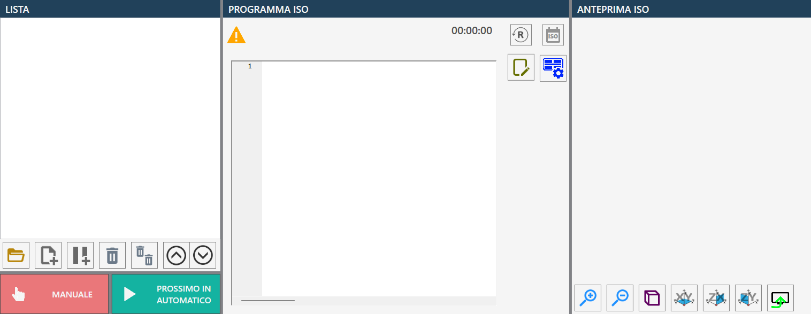
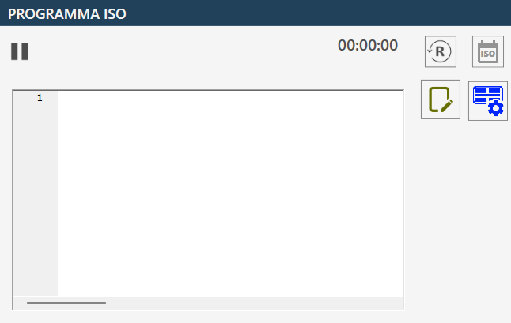

The ISO file programming page allows to manage and start the workings through .pgm files created previously through CAD-CAM programs.

List
The ISO program list, initially empty, contains all the ISO programs that can be executed sequentially.

Buttons
There are a series of buttons for the list management.
 | Open File |
New ISO list | |
Add Pause | |
Remove selected element | |
 | Empty list |
Move selected element higher | |
 | Move selected element lower |
In the lower part we find also the two buttons relative to the execution modes of the programs:
  | Manual / automatic |
  | Single / Next Automatic |
Open file
The pressure of this button will make appear a window 'Open File' as shown in the following image:

This window is divided in the following components:
List Files
include all files in format .pgm present in the directory currently selected
Buttons between the Files list and the Selected Files list
Selected File List
List initially empty
Preview Selected file
Shows a preview of a .pgm file selected from Files or from Selected File
Bottom bar and search filter
Central buttons, placed between the 'FILES' list and the 'SELECTED FILES' list
Select element | |
Remove element | |
Insert Pause | |
Move selected element top | |
 | Move selected element low |
The content of the lower bar is reported here.
 | Clean search filter |
 | Sorting by last modify |
Alphabetical Sort | |
Viewing key file | |
 | View ISO folder |
 | Viewing contents |
Remove file | |
Enable/Disable copy |
ISO Program Code
The program ISO code running is displayed in this window:

Buttons
In this section of the ISO program we have the following buttons and relative functionalities.
 | Timer and Reset |
 | View ISO |
Block search | |
 | Block search for line Subsequently to the insertion of a number in the 'Row number' field and pressing the 'Go to' button, the ISO program code view will be moved to the desired line, or to the last available line if the composed number exceeds the number of lines present in the selected ISO program. It is possible to conclude the search of a block, and restore the visibility of the 'Block search' button, via the Pressure of the Close button: |
Dry Run function (Activated / deactivated) | |
 | ISO test function (Activated / deactivated) |
Suction cups panel | |
 | Save |
Block search
During the execution of (.pgm) files, the block search function could be useful to reposition the tool to the point where the machine has interrupted the program execution, in case of tool blockage inside the material or other types of blockage.
Once the button has been pressed, you can search for the line from which to continue/start the working, via the line number by pressing the 'Search block by line' button or by scrolling the file via the scroll bar placed next to the file and selecting the desired line.
After having selected the point of the program from which the machine will continue the interrupted work, press the 'Start cycle' button; the machine will recalculate all the lines of code in the .pgm file without executing any movement. The speed of this operation depends on the number of lines of code that must be generated without executing any movement.
After the recalculation, the machine activates an automatic pause, requiring a further press of the ‘Start cycle’ button to start the processing.
It is recommended before starting the cycle to consider the initial positioning of the machine involving all axes simultaneously.
This is necessary because the machine moves from the current position to the point where it starts working, seeking the shortest route, and to do that, all axes move to arrive exactly at that point.
This means that, for example, the Z axis doesn't lower once reached the starting point, but lowers gradually during the path. This could damage the machine or the material if the latter should collide with material in the middle of the path.
So it is possible, on basis of the situation in which oneself finds, to deselect the movement of one or more axes, so as to not cause damages.
To do it is enough to select the buttons present above each axis that from green will become red.
The buttons will turn green automatically once pressed on 'Start Cycle'.
View ISO
If the ISO preview has been enabled, it will be displayed to the right of the 'ISO Program Code' frame, another frame similar to the one shown below:

The ISO preview makes available the following buttons:
 | Perspective view |
 | Orthogonal viewing to XY plane |
 | Orthogonal view to ZX plane |
 | Visual perspective orthogonal to the ZY plane |
 | Activate or deactivate the preview display  |
Execution of working
The operator has the possibility to create a list of PGM files by opening the desired files through the dedicated upload function.
Before to start execution, is possible — optionally — to modify order of files in list and to insert any pause between an execution and the other. These pauses allow to manage more flexible process and, if necessary, to interrupt it in safety.
By setting the execution mode to 'Automatic', the 'ISO Test' function is also available, useful to verify the correctness of the selected ISO program before the actual execution.
To start the execution cycle, the operator must press the 'Start Cycle' button. In this way, the first ISO program loaded and displayed in the list will be executed.
The ISO programs can be executed according two operative modes:
The 'Single' mode allows to interrupt the program execution at the end of each ISO file execution. It is necessary to press again the ‘Start Cycle’ button to proceed with the execution of the next file in the list.
The 'Next Automatic' mode allows the execution of ISO files in sequence, without need of manual intervention, until the end of the list.
In both modes, any pause inserted between files allows the operator to interrupt the cycle at any time, guaranteeing thus a continuous control on the execution.